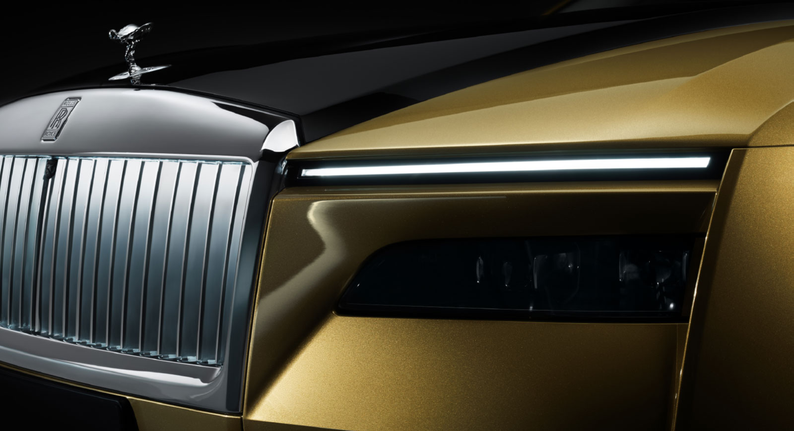
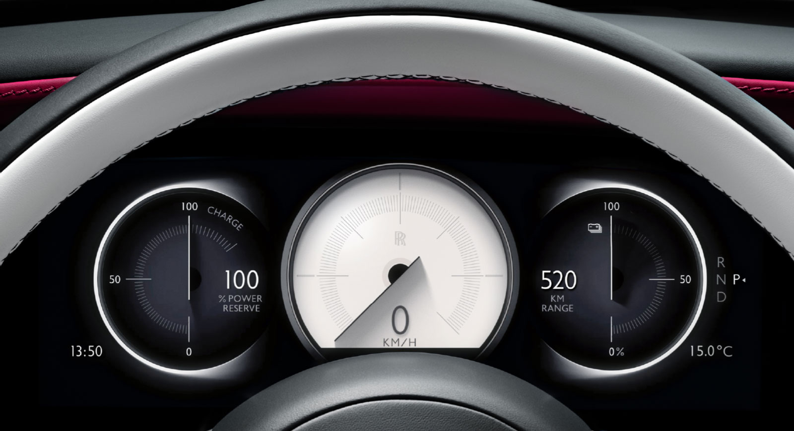

<!DOCTYPE html>
<html lang="ko">

<head>
    <meta charset="UTF-8">
    <meta http-equiv="X-UA-Compatible" content="IE=edge">
    <meta name="viewport" content="width=device-width, initial-scale=1.0">
    <title>rolls-royce</title>
    <link rel="stylesheet" href="./css/mainCss.css">
</head>

<body style="margin: 0 auto;">

    <navbar>
        <div class="left">
            <a href="./index.html" class="left"></a>
        </div>
        <div class="center">
            <a href="./rollRoyce.html"></a>
            <a href="./maserati.html"></a>
            <a href="./porsche.html"></a>
        </div>
    </navbar>


    <!-- 첫 페이지에 떠있는 동영상입니다.-->
    <!-- 확작명이 mp4(동영상) 와 같은 동영상 파일의 경우 src안에 경로를 바꿔주세요. -->
    <video id="tag1" class="mainImg" src="./img/rollsRoyceMainImg.mp4" autoplay loop muted></video>
    <!-- jpg(이미지) 또는 gif(움짤)의 경우 아래의 코드에서 src를 수정 바랍니다.-->
    <!--  -->


    <!-- 글자 블럭 입니다. h1태그안에 있는 글자는 제목을 <p>태그 안에 있는것은 내용입니다. -->
    <div class="text" id="fade">
        <h1>현실이 된 예언. 전기화된 정신.</h1>
        <p>
            간결해진 환희의 여신상은 위풍당당한 모습으로 SPECTRE를 리드합니다. 우리의 아키텍처 오브 럭셔리를 기반으로 만들어진 SPECTRE는 지금까지 중 가장 강력하고 가장 공기 역학적인 롤스로이스로, 
            차체의 모든 라인은 궁극의 우아함과 퍼포먼스를 위해 그려졌습니다. 마음을 사로잡는 주행 경험. 그 무엇과도 비교할 수 없는 럭셔리의 기준.
        </p>
    </div>


    <div style="height: 500px;"></div>


    <!-- 글자 블럭 입니다. h1태그안에 있는 글자는 제목을 <p>태그 안에 있는것은 내용입니다. -->
    <div class="text" id="fade">
        <h1>자연스러운 퍼포먼스. 선구적인 정신. 럭셔리의 새로운 표현</h1>
        <p>
            SPECTRE는 롤스로이스가 2030년까지 전 모델 포트폴리오를 전기화 시키는 새로운 전기의 세계로 선두의 위치에서 들어갈 수 있게 해 줍니다. 
            선구적인 디자인은 시간이 지나도 변치 않을 아이콘을 재창조함으로써 롤스로이스의 순수 전기 시대를 향한 명확한 길을 열어줍니다.
        </p>
    </div>

    <!-- class="imgText" 로 감싸져 있는 블럭은 이미지와 글짜를 나란히 배치 시킵니다. -->
    <div class="imgText" id="fade">
        <!-- 아래의 이미지 태그 밑에 src 값을 변경해주어 이미지를 변경이 가능합니다. -->
        
        <div style="margin: 3%;">
            <!-- 아래의 h2 태그안에 있는 글자릅 바꾸어 소제목 변경이 가능합니다. -->
            <h2>아이코닉한 헤드라이트</h2>
            <!-- 아래의 p 태그안에 있는 글자를 바꾸어 해당 블럭의 설명글을 변경이 가능합니다. -->
            <p>롤스로이스의 아이코닉한 분리된 헤드라이트는 SPECTRE의 영혼적 전신이라 할 수 있는 팬텀 쿠페 이후에는 볼 수 없었습니다. SPECTRE는 상부의 주간주행등과 앞 길을 환하게 비춰주는
                하부의 4-램프 클러스터, 이 2가지 요소로 독창적이고 시선을 사로잡는 디자인을 이어가고 있습니다.</p>
        </div>
    </div>

    <!-- 위의 블럭과 동일하나 이미지와 설명에 대한 글의 위치를 바꾸었습니다. -->
    <div class="imgText" id="fade">
        <div style="margin: 3%;">
            <h2>멋진 휠</h2>
            <p>SPECTRE의 기초가 되는 비스포크 알루미늄 스페이스 프레임인 아키텍처 오브 럭셔리에는 이제 23인치 휠이 최초로 적용됩니다. 그 결과, 
                미적인 관점에서나 성능적인 관점에서 놀라운 효과를 가져옵니다. 빙판길이나 눈 덮인 도로에서도 윈터 타이어와 결합된 이 휠은 주행의 즐거움을 선사합니다.</p>
        </div>
        
    </div>

    <div class="imgText" id="fade">
        
        <div style="margin: 3%;">
            <h2>에포트리스 도어</h2>
            <p>SPECTRE의 도어는 롤스로이스 차량 중 가장 큰 1.5m의 길이를 갖추고 있습니다. 이 넉넉한 크기를 통해 우아한 승하차가 가능해집니다. 버튼 한번에 열고 닫을 수 있는 
                이 도어에 적용된 기술을 마치 항상 준비되어 있는 기사를 두고 있는 느낌을 선사합니다.</p>
        </div>
    </div>

    <div class="imgText" id="fade">
        <div style="margin: 3%;">
            <h2>화사해진 색상</h2>
            <p>SPECTRE는 지금까지 한번도 본 적 없는 실외 색상인 샤르트뢰즈 (Chartreuse)를 선보이는데, 이는 프랑스 그르노블 산악 지역에서 수도사들이 만든 프랑스 리큐어가 가지는 녹색 톤을 복제한 
                선명한 색상입니다. 이 리큐어와 마찬가지로 샤르트뢰즈 색상은 매혹적인 풍부함과 깊이감으로 보는 사람들의 시선을 뗄 수 없게 만듭니다.</p>
        </div>
        
    </div>


    <div style="height: 200px;"></div>


    <div class="text" id="fade">
        <h1>엄청난 지능을 갖춘 전기차</h1>
        <p>
            직관적이고 지각이 있으며 예리한SPECTRE는 지금까지 중 가장 지능적인 롤스로이스입니다. 141,200개의 송수진 기능과 7km에 달하는 케이블링, 
            25,000가지가 넘는 하위 기능을 통해 복잡한 데이터를 처리하고 디테일한 정보를 교환할 수 있는 능력을 갖추게 되었습니다. SPECTRE에는 이 차의 
            우수한 지능을 잘 보여주는 운전자 보조 시스템이 10가지 넘게 적용되었으며 , 이를 통해 부드럽고 안전한 주행을 가능하게 합니다.
        </p>
    </div>

    <div class="imgText" id="fade">
        
        <div style="margin: 3%;">
            <h2>비스포크 인스트루먼트 다이얼</h2>
            <p>
                롤스로이스에 최초로 적용된 풀 디지털 비스포크 인스트루먼트 다이얼은 SPECTRE의 디지털 정체성과 롤스로이스의 독보적인 디자인 역량을 잘 보여주는 기술적 장인정신의 집합체입니다. 
                SPECTRE 오너분들은 개인 맞춤화된 보완적인 다이얼 색상을 주문 시 선택할 수 있습니다. 운전석에서 보는 뷰를 현대화 시켜주는 이 다이얼의 핸즈는 반짝이는 별들로 장식되어 스타라이트 도어, 
                스타라이트 헤드라이너 그리고 일루미네이티드 패시아와의 연결성을 선사합니다.
            </p>
        </div>
    </div>

    <div class="imgText" id="fade">
        <div style="margin: 3%;">
            <h2>WHISPERS와 연결</h2>
            <p>롤스로이스의 경험은 물리적인 주행을 넘어서까지 확장됩니다. 오너분들만을 위한 앱인 Whispers를 통해 운전자들은 지금까지 중 가장 연결된 롤스로이스인 SPECTRE와 함께할 수 있습니다. 
                연결이 되고 나면, 운전자는 레스토랑 추천과 같은 Whispers 상의 위치를 차량으로 직접 전송해 끊김 없는 여정이 가능해집니다. 뿐만 아니라 가장 가까운 충전소를 찾고 실내 온도를 최적으로 
                미리 맞춰 놓을 수도 있으며 SPECTRE의 문을 모바일 기기에서 안전하게 잠그고 열 수 있습니다.</p>
        </div>
        
    </div>


    <div style="height: 200px;"></div>


    <div class="text" id="fade">
        <h1>럭셔리한 세련됨과 사려 깊은 디자인</h1>
        <p>SPECTRE는 눈부시게 우아함 실내 디자인, 정교한 장인정신, 놀라움을 자아내는 기능과 최고의 편안함으로 모든 기대를 능가합니다.</p>
    </div>

    <div class="imgText" id="fade">
        
        <div style="margin: 3%;">
            <h2>천상으로의 입장</h2>
            <p>
                마음을 사로잡는 실내 옵션인 스타라이트 도어 (Starlight Doors)는 뒤에서 빛을 내는 4,796개의 천공을 통해 빛을 발합니다. 
                모든 ‘별’들은 수작업으로 자리를 잡아 SPECTRE의 실내에서 은은한 움직임을 만들어 냅니다. 이 별빛은 스타라이트 헤드라이너와 일루미네이티드 
                패시아와 함께 아름다운 심포니를 만들어 별빛에 둘러 싸인 듯한 몰입감 있는 360도 경험을 선사합니다.
            </p>
        </div>
    </div>

    <div class="imgText" id="fade">
        <div style="margin: 3%;">
            <h2>별들의 캐노피</h2>
            <p>롤스로이스의 스타라이트 헤드라이너는 2007년 데뷔때부터 섬세하게 자리 잡힌 광섬유 라이트가 선사하는 밤하늘의 빛으로 승객들을 사로잡는 옵션으로 자리매김했습니다. 
                정교하게 설정된 유성 쇼로 빛나는 이 밤하늘은 SPECTRE에도 이어져 시간이 지나도 변치 않는 롤스로이스의 아이코닉한 옵션으로 남게 되었습니다.</p>
        </div>
        
    </div>

    <div class="imgText" id="fade">
        
        <div style="margin: 3%;">
            <h2>우수한 시트</h2>
            <p>
                SPECTRE의 뒷좌석은 롤스로이스 본사 굿우드의 세계적인 디자이너, 엔지니어 그리고 장인들이 기본적인 컨셉을 한 단계 더 끌어 올린 최상급의 “마스터클래스”입니다. 
                이어지는 시트 디자인이 승객을 감싸 안으며 탄력 있는 가죽으로 이들을 보호하는 느낌을 선사합니다.
            </p>
        </div>
    </div>

    <div class="imgText" id="fade">
        <div style="margin: 3%;">
            <h2>정교한 목공예</h2>
            <p>롤스로이스의 공예가들은 많은 시간을 가장 작은 디테일까지 완벽하게 만드는데 쏟는데, 이는 수 년간의 맹훈련을 통해 습득된 것입니다. 가장 높은 수준의 정밀함과 기술을 요하는 장식적인 
                부분들을 갖춘 목공예도 예외는 아닙니다. 실내의 오픈 포어 베니어가 바로 그 증거라 할 수 있습니다. 신도라(Sindora)라는 이 옵션은 인도네시아에서 기원합니다. 이 우드의 과감한 결이 
                실내에 질감을 더해줘, 깨끗하고 정제된 디지털화 된 표면과 균형을 맞춰줍니다.</p>
        </div>
        
    </div>


    <a href="#tag1"><h1>최상단으로 이동하기</h1></a>

</body>

<script src="./js/mainjs.js"></script>

</html>